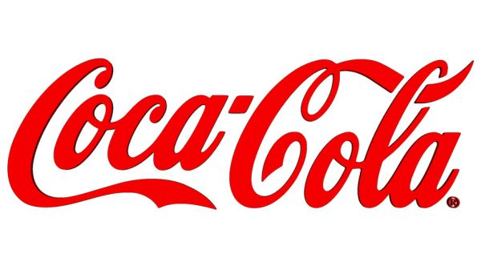
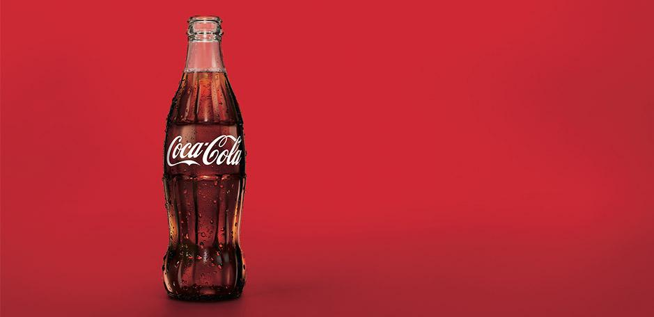

|  | The Coca-Cola Company - американская пищевая компания, крупнейший мировой производитель и поставщик концентратов, сиропов и безалкогольных напитков. Наиболее известным продуктом компании является напиток Coca-Cola. Входит в список Fortune 500 по итогам 2020 года (88-е место). Штаб-квартира находится в столице штата Джорджия, Атланте.
В 1886 году фармацевт Джон Пембертон придумал этот напиток, как лечение зависимости от морфия, представил крупной аптеке Кока Колу: состоящий из воды, сахара, кофеина, экстрактов листьев коки и ореха кола, там напиток продавали по 5 центов за стакан. В 1888 году Пембертон скончался в нищете, а права были выкуплены у его вдовы предпринимателем Эйзой Кэндлером за $2300, который в 1892 году зарегистрировал эту компанию под названием Coca-Cola Company и за десять лет вместе с 50 сотрудниками создал национальный бренд Coca-Cola. В 1899 году было основано первое предприятие по производству этого напитка на правах франчайзинга. Такая модель, при которой головная компания ограничивалась производством концентратов напитков и их маркетингом, а сторонние компании покупали эти концентраты, разводили их подслащённой газированной водой, бутилировали и продавали, сохранялась большую часть XX века.
Эйза Кэндлер - американский предприниматель, основавший компанию «Кока-Кола». Также был мэром Атланты, штат Джорджия.
Кэндлер начал свою карьеру как владелец аптеки. В 1887 году он купил рецепт «Кока-Колы» у его изобретателя Джона Стита Пембертона за 2300 долларов. Успех «Кока-Колы» принес ему целое состояние. В 1892 году он основал компанию «Кока-Кола». Год спустя Кэндлер защитил бренд «Кока-Кола» и начал продавать свой продукт в 1895 году в Соединённых Штатах, а с 1896 года также в соседних странах.
Кэндлер был членом Епископальной Методистской Церкви Юга (BMKS), предшественника Евангелистской Методистской Церкви. Он пожертвовал церкви миллион долларов и участок земли для строительства университета Эмори, чтобы перевезти его из Оксфорда в Атланту. Школа теологии носит имя Кэндлера. Кэндлер также пожертвовал миллионы на больницу Эмори.
В 1917 году Кэндлер ушёл из компании и стал мэром Атланты (1917—1919). В январе Эйза Кэндлер передал управление бизнесом своему сыну Говарду. На Рождество Кэндлер завещал 90 % голосующих акций своим родственникам, за исключением семи. Однако уже в 1919 году Говард Кэндлер продал компанию «Кока-Кола» консорциуму во главе с Эрнестом Вудраффом и Юджином Стетсоном за 25 миллионов долларов.
 |